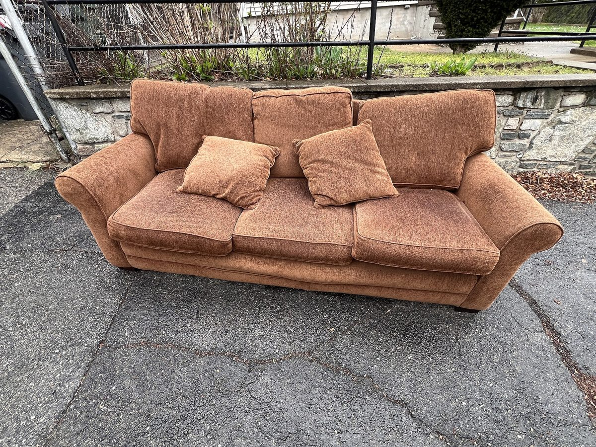

How-to videos
How-to videos
Short videos with captions and a voiceover. Each one has a written transcript under it. Facts come from the City of Springfield and Republic Services pages, checked 2026-10-26.

- Watch videosShort step-by-step guides
- Read transcriptsEvery word, written out
- City rulesFrom official Springfield pages
- Junk removalLocal options
How to bag a mattress for pickup
Thumbnail photo: “Discarded mattress by trash bin” by Eric Fischer, licensed under CC BY 2.0. Cropped; play button and length added.
.jpg){kind=link}
Video 1 of 3 · 0:40
How to bag a mattress for pickup
Five steps: check with your hauler, get a mattress bag or thick plastic, bag it from the top down, tape it shut, and set it out on the right day.
In this video
- 0:00Intro
- 0:06Step 1: Call your hauler
- 0:13Step 2: Get a mattress bag
- 0:20Step 3: Bag it top down
- 0:26Step 4: Tape it shut
- 0:30Step 5: Set it out on time
- 0:35Wrap-up
Transcript (what the video says and shows)
Intro: Old mattress going out? Bag it the right way first. How to bag a mattress for pickup
- First, call your trash hauler. Ask if they pick up mattresses and what it costs.
- Get a mattress bag or thick plastic. Republic Services asks that mattresses be wrapped in plastic.
- Stand the mattress on its side. Slide the bag over it from the top down.
- Tape the open end shut so the bag stays closed.
- Set it out only on the day your hauler tells you. Check your own hauler's rules.
Ending: Find more local guides at Bulky Item Guide.
How to get a couch ready for bulk pickup
Thumbnail photo: “One-way to the love seat” by Michael McCauslin, licensed under CC BY 2.0. Cropped; play button and length added.

Video 2 of 3 · 0:46
How to get a couch ready for bulk pickup
Ask about bulk pickup, keep the couch in one piece, empty the cushions, and set it out where your hauler says. No pickup? The landfill option is at the end.
In this video
- 0:00Intro
- 0:07Step 1: Ask about bulk pickup
- 0:12Step 2: Keep it in one piece
- 0:18Step 3: Check the cushions
- 0:25Step 4: Set it out right
- 0:29Step 5: No pickup? Landfill
- 0:42Wrap-up
Transcript (what the video says and shows)
Intro: Couch going to the curb? Do these five things first. How to get a couch ready for bulk pickup
- Ask your hauler if they offer bulk pickup at your address, and the price.
- Keep the couch in one piece. Republic Services asks that sofas not be taken apart.
- Check the cushions and pockets. Take out keys, coins, and anything you want to keep.
- Put it out only where and when your hauler says.
- No pickup? Springfield's Noble Hill Landfill takes it: $43.85 per ton, $20 minimum. Checked 2026-10-26.
Ending: Find more local guides at Bulky Item Guide.
Mattress drop-off in Springfield, MO
Thumbnail photo: “Stacked Mattresses” by Alan Stanton, licensed under CC BY-SA 2.0. Taken in London, not Springfield. Cropped; play button and length added; this thumbnail is shared under CC BY-SA 2.0.

Video 3 of 3 · 0:57
Mattress drop-off in Springfield, MO
What Springfield's drop-off sites accept, the $20-per-piece fee, the two city sites and Noble Hill Landfill with their hours, and where mattresses get recycled.
In this video
- 0:00Intro
- 0:08Step 1: Clean, dry, no bugs
- 0:15Step 2: $20 per piece
- 0:22Step 3: City drop-off sites
- 0:33Step 4: Noble Hill Landfill
- 0:43Step 5: Recycled locally
- 0:52Wrap-up
Transcript (what the video says and shows)
Intro: Dropping off a mattress in Springfield? Here's what you need to know. Mattress drop-off in Springfield, MO
- The mattress must be clean, dry, and free of bugs. Wet or very dirty ones are turned away.
- The fee is $20 per piece. A mattress is $20. A box spring is $20.
- Lone Pine Ave. (3020 S. Lone Pine) or Franklin Ave. (731 N. Franklin): Tue to Sat, 8 a.m. to 4:30 p.m.
- Noble Hill Landfill, 3545 W. Farm Rd 34, Willard: Mon to Fri 7 to 3:30, Sat 7 to 2:30.
- Mattresses are recycled through Victory Mission. Source: City of Springfield, checked 2026-10-26.
Ending: Find more local guides at Bulky Item Guide.
Sources: (Springfield Mattress Recycling) (Noble Hill Landfill) (Republic Services bulk pickup)
Anything not listed here: check with the city or your hauler. Fees and hours change. Last checked 2026-10-26.